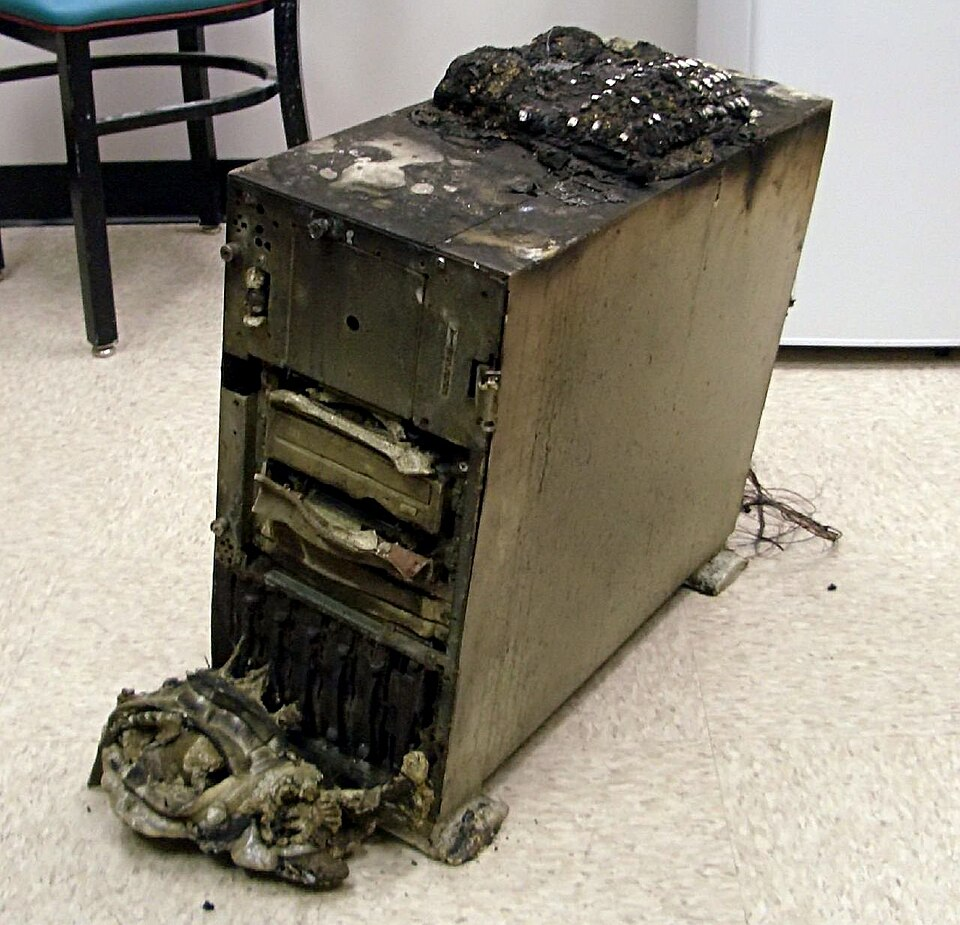
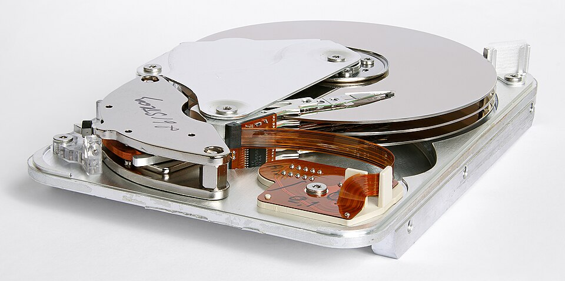

Realización y restauración de copias de seguridad
Una copia de seguridad (backup) es una réplica de los datos para recuperarlos ante fallos de hardware, errores humanos o ciberataques. Una buena estrategia combina frecuencia, ubicación y verificación de la restauración.

1. Tipos de copia
| Tipo | Descripción |
|---|---|
| Completa | Copia todos los datos seleccionados. |
| Incremental | Solo los cambios desde la última copia. |
| Diferencial |  ="px-4 py-2 border border-slate-200 align-top">Cambios desde la última copia completa. |
2. Herramientas: rsync y dd
rsync sincroniza archivos de forma eficiente (solo copia lo que cambia). dd hace una copia byte a byte, ideal para clonar discos completos o hacer imágenes.
# Copia incremental con rsync (conserva permisos) rsync -avh /home/usuario/ /mnt/backup/usuario/ # Clonar un disco completo (¡cuidado con el orden!) sudo dd if=/dev/sda of=/dev/sdb bs=4M status=progress # Crear una imagen ISO de un disco sudo dd if=/dev/cdrom of=cd.iso bs=2048
flowchart TD
A[Datos origen] --> B{Strategia}
B -->|Completa| C[Copia todo]
B -->|Incremental| D[Solo cambios]
B -->|Diferencial| E[Desde completa]
C --> F[Medio: disco externo]
D --> F
E --> F
F --> G[Verificar restauración]
C --> H[Medio: nube]
D --> H
E --> H
3. Copias de imagen y en la nube
Las copias de imagen (ej. con Clonezilla o las herramientas de Windows) replican partición o disco enteros. La nube (servicios como almacenamiento en la nube) aporta la regla 3-2-1: 3 copias, 2 medios distintos, 1 externa.
mindmap
root((Backup))
Herramientas
rsync
dd imagen
Clonezilla
Destinos
Disco externo
Nube
Red local
Regla 3-2-1
3 copias
2 medios
1 offsite
Ejemplo resuelto en clase
Caso práctico: Hacer y restaurar una copia de seguridad.
- Elige qué respaldar (carpeta Documentos) y dónde (USB externo).
- Windows: 'Historial de archivos'; Linux:
rsync -a /orig/ /dest/. - Verifica que los archivos están en el destino (ábrelo).
- Simula pérdida: borra el original y restaura desde la copia.
graph TD ORIG[Carpeta] --> CP[Copia en USB] BORRA[Borrar orig] --> REST[Restaurar]
Ejercicio para resolver (que propone el profesor al alumno): El alumno hace una copia con rsync/History, la verifica y restaura tras borrar el original.
Ampliación de contenido
Para entender lo anterior (puentes conceptuales)
- Una copia es "el seguro del seguro". El disco puede morir, un ransomware puede cifrarlo, un alumno puede borrarlo. La copia es lo único que te salva.
- "Tener una copia" ≠ "tenerla bien". Una copia en el mismo disco que se caiga no sirve; y una copia que nunca se probó restaurar puede estar corrupta. Por eso se habla de estrategia.
- Completa / incremental / diferencial son "cuánto se copia". Completa = todo; incremental = lo que cambió desde la última (sea cual sea); diferencial = lo que cambió desde la última completa.
Para profundizar en los contenidos actuales
rsync: eficiente y conserva permisos. rsync -avh solo copia lo que cambió y mantiene dueño/permisos (clave para /home). Es la navaja suiza de las copias en Linux.
dd: byte a byte, peligroso. Clona discos o hace imágenes, pero if= (origen) y of= (destino) al revés = borrar el disco bueno. Por eso se usa con extremo cuidado y solo para imágenes completas.
Imágen vs copia de archivos. La imágen (Clonezilla, dd) replica partición/disco y arranca igual; la copia de archivos (rsync) replica contenido pero hay que reinstalar el SO. Para recuperación rápida en aulas, la imágen maestra gana.
Regla 3-2-1. 3 copias, en 2 medios distintos, 1 fuera de las instalaciones (offsite/nube). Cubre incendio, robo y fallo de un medio. Es el mínimo profesional.
Verificar la restauración. Una copia no sirve si no se restaura. El plan serio incluye probar restaurar una copia de prueba periódicamente; si no, descubres que está corrupta el día que la necesitas.
Revisión didáctica
- "Hacer una copia" no es "seguridad". Si está en el mismo equipo o nunca se probó restaurar, no es una copia fiable. Hace falta la regla 3-2-1 y verificar.
- dd no es "un copia rápida más". Es peligroso: un
if/ofinvertido destruye datos. Usarlo sin revisar el comando es un riesgo real. - Incremental ≠ diferencial. El incremental parte de la última copia (sea completa o no); el diferencial, siempre de la última completa. Afecta al tiempo de restauración.
- Imágen no es "copia de mis documentos". La imágen replica el sistema entero; para solo tus archivos basta rsync. No confundir objetivos.
- La nube no es "infalible". Un borrado sincronizado se borra también arriba; por eso la copia externa aislada importa.
Hilo de aprendizaje sugerido: (1) por qué hace falta copia → (2) completa/incremental/diferencial → (3) rsync vs dd vs Clonezilla → (4) imágen vs archivos → (5) regla 3-2-1 → (6) verificar la restauración (la parte que todos olvidan).
Enlaces relacionados
- Gestión de sistemas de archivos
- Herramientas de administración de discos
- Criterio RA3-f: copias de seguridad
Recursos externos
Vídeos y artículos recomendados para ampliar y preparar el tema: